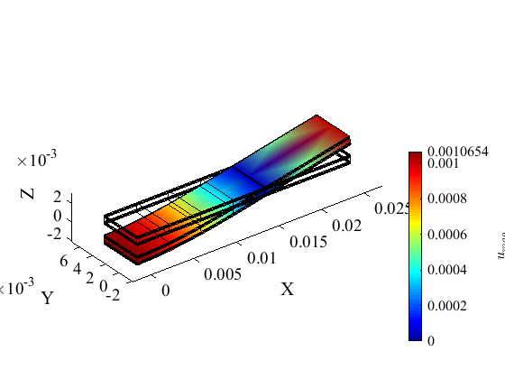

Laminated Strip Under Three-Point Bending: a single-region formulation
Contents
Link to the m-file.
Description
Determine the central transverse displacement in a simply-supported seven layer symmetric strip with a central line load. A 0/90/0/90/0/90/0 material lay-up is specified with the center ply being four times as thick as the others.
Reference: NAFEMS Report R0031, Test No.1, 17-Dec-1998.
The plate is discretized with solid serendipity quadratic hexahedral elements. Because of the symmetries of the geometry and load, only the first-quadrant (in XY) quarter of the plate is modeled.
The coordinate system is centered at point E (at the difference with respect to the original benchmark definition). The load is applied along a curve passing through point C. The simple support is applied along the curve passing through point B.
 |
| Figure 1. Definition of the geometry of the thick elliptical plate |
We realize the simple supports along the lines A, B and the line load at point C are illegal from the point of view of convergence. No convergence can be hoped for as the stress underneath the load and above the simple supports is infinite in the limit (these locations are stress singularities). However, for relatively coarse meshes the results away from the singularities are still meaningful.
The target quantities are displacement at the bottom surface at point E, the tensile axial stress at the same point, and of the transverse shear stress at point D in between the bottommost two layers (See figure 1).
The difference with respect to the tutorial pub_R0031NAFEMS is in the handling of the finite element regions. While pub_R0031NAFEMS defined two regions, one for each orientation of the lamina, the present tutorial defines a single finite element region. The orientation is defined using a function That computes the orientation for each finite element on the fly.
Solution
function pub_R0031NAFEMS_1_region
u= physical_units_struct;
The material is orthotropic, the same in all seven layers (the orientation of the material is different ddepending on the layer, of course).
E1=100e3*u.MEGA*u.PA; E2=5e3*u.MEGA*u.PA; E3=E2;
G12=3e3*u.MEGA*u.PA; G13=2e3*u.MEGA*u.PA; G23=2e3*u.MEGA*u.PA;
nu12= 0.4; nu13= 0.02; nu23= 0.3;
The geometry of the strip.
AB=30*u.MM; % span between simple supports OH=10*u.MM;% overhang W=10*u.MM;% width of the plate
The line load is in the negative Z direction.
q0 = -10*u.NT/u.MM;% find load
Here we define the layout and the thicknesses of the layers.
angles =[0,90,0,90,0,90,0];
ts= [0.1, 0.1, 0.1, 0.4, 0.1, 0.1, 0.1]'*u.MM;% layer thicknesses
TH=sum(ts);% total thickness of the plate
Reference deflection under the load is
wEref=-1.06*u.MM;
The reference tensile stress at the bottom of the lowest layer is
sigma11Eref=684*u.MEGA*u.PA;
Because we model the first-quadrant quarter of the plate using coordinate axes centered at the point E the shear at the point D is positive instead of negative as in the benchmark where the coordinate system is located at the outer corner of the strip.
sigma13Dref=4.1*u.MEGA*u.PA;
The mesh is created using the composite-plate utility, making sure the nodes are placed at the location of the simple support by using the version H8_composite_plate_x.
We select 8 elements spanwise and 2 elements widthwise. The overhang of the plate is given one element.
nL=4; nO=1; nW=1;
Each layer is modeled with a single element.
nts= 1*ones(length(angles),1);% number of elements per layer
Define the geometrical tolerance using the minimal dimension in the model.
tolerance =min(ts)/max(nts)/100;
The nodes must be located so that the simple support can be applied.
xs=unique([linspace(0,AB/2,nL+1),linspace(AB/2,AB/2+OH,nO+1)]);
ys=linspace(0,W/2,nW+1);
[fens,fes] = H8_composite_plate_x(xs,ys,ts,nts);;
[fens,fes] = H8_to_H20(fens,fes);
The model data is packaged for the solver as before:
clear model_data
model_data.fens =fens;
We will now create a single finite element region for the 0° and the 90° layers.
clear region region.property = 'orthotropic'; region.E1 =E1; region.E2 =E2; region.E3 =E3; region.G12=G12; region.G13=G13; region.G23=G23; region.nu12=nu12; region.nu13=nu13; region.nu23=nu23; region.fes= fes; region.integration_rule = gauss_rule (struct('dim', 3, 'order', 3));
A distinguishing characteristic is the use of a function handle to be used by the finite element model machine to define the orientation of the material at each quadrature point. The function in this case is written to distinguish between the different lamina (layers) using the finite element label: the label is equal to the layer number, and therefore we can use a simple lookup into the array of orientation angles (angles(label)) to compute the material orientation matrix on the fly.
function Rm = LayerRm(XYZ, ts, label)% label equals the layer number here Rm= rotmat(angles(label)/180*pi* [0,0,1]); end region.Rm =@LayerRm model_data.region{1} =region;
region =
property: 'orthotropic'
E1: 1.0000e+11
E2: 5.0000e+09
E3: 5.0000e+09
G12: 3.0000e+09
G13: 2.0000e+09
G23: 2.0000e+09
nu12: 4.0000e-01
nu13: 2.0000e-02
nu23: 3.0000e-01
fes: [1x1 fe_set_H20]
integration_rule: [1x1 gauss_rule]
Rm: @pub_R0031NAFEMS_1_region/LayerRm
These steps are as before, until we get to the postprocessing of the stress.
The essential boundary conditions are applied on the symmetry planes. First the plane X=0;...
clear essential essential.component= [1]; essential.fixed_value= 0; essential.node_list = fenode_select(fens, ... struct('box', [0,0,-Inf,Inf,-Inf,Inf], 'inflate',tolerance)); model_data.boundary_conditions.essential{1} = essential;
... and then the plane Y=0.
clear essential essential.component= [2]; essential.fixed_value= 0; essential.node_list = fenode_select(fens, ... struct('box', [-Inf,Inf,0,0,-Inf,Inf], 'inflate',tolerance)); model_data.boundary_conditions.essential{2} = essential;
The transverse displacement is fixed along the line passing through point B. The nodes are fixed in the box along this line in the Z direction.
clear essential essential.component= [3]; essential.fixed_value= 0; essential.node_list = fenode_select(fens, ... struct('box', [AB/2,AB/2,-Inf,Inf,0,0], 'inflate',tolerance)); model_data.boundary_conditions.essential{3} = essential;
The traction boundary condition is applied along the edge of the mesh passing through point C at the top surface of the strip. First we extract the boundary of the hexahedral mesh.
clear traction
bdry_fes = mesh_boundary(fes, []);
This boundary consists of quadrilaterals. From the collection of the boundary quadrilaterals we select those at the top surface.
bcl = fe_select(fens, bdry_fes, ... struct ('box',[0,0,-Inf,Inf,-Inf,Inf],'inflate',tolerance));
We extract the boundary of the quadrilaterals at the top surface of the strip. This boundary will consist of L3 line elements.
line_fes = mesh_boundary(subset(bdry_fes,bcl), struct('other_dimension',1));
From the line elements we will select only those that pass through point C. That is the straight line on which the traction is going to be applied.
lcl = fe_select(fens, line_fes, ... struct ('box',[0,0,-Inf,Inf,TH,TH],'inflate',tolerance)); traction.fes =subset(line_fes,lcl);
Note that we have to apply only half of the line load given that were modeling just one quarter of the geometry and were splitting the line load with the symmetry plane X=0.
traction.traction= [0; 0; q0/2];
traction.integration_rule =gauss_rule (struct('dim', 1, 'order', 3));
model_data.boundary_conditions.traction{1} = traction;
The model is defined and we obtain the displacement solution:
model_data =deformation_linear_statics(model_data);
The results are now presented graphically. Scale for the deflections:
u_scale=2;
model_data.postprocessing.u_scale= u_scale;
model_data=deformation_plot_deformation(model_data);
 The results of the displacement and stresses will be reported at nodes located at the appropriate points.
nE=[fenode_select(fens, struct('box', [0,0,0,0,0,0],... 'inflate',tolerance))]; nC=[fenode_select(fens, struct('box', [0,0,0,0,TH,TH],... 'inflate',tolerance))]; nD=[fenode_select(fens, struct('box', [0,0,0,0,ts(1),ts(1)],... 'inflate',tolerance))];
The displacement is reported at the bottom surface:
wc=gather_values(model_data.u,nE);
disp(['Center deflection=' num2str(wc(3)/u.MM) ' mm, wc/wc_ref=' num2str(wc(3)/wEref*100) '%'])
Center deflection=-1.0568 mm, wc/wc_ref=99.698%
We are going to plot the stress using a nodal stress field. It is extracted from the quadrature points. Since we have a single region, the nodal stress field would be continuous. That may be correct if the stress is expected to be continuous (for instance the transverse shear stress), but it is not correct when the stress is not expected to be continuous (the axial stress due to bending).
In order to treat correctly the discontinuous stress, we will create lists of finite elements, one for the layers with 0° orientation, and one for the layers with 90° orientation.
region1list=[fe_select(fens,fes,struct('label', 1)), fe_select(fens,fes,struct('label', 3)), fe_select(fens,fes,struct('label', 5)), fe_select(fens,fes,struct('label', 7))]; region2list=[fe_select(fens,fes,struct('label', 2)), fe_select(fens,fes,struct('label', 4)), fe_select(fens,fes,struct('label', 6))];
We will create a copy of the finite element model machine that was used to compute the solution, and we will change it by resetting the finite elements that form its region. First, it will be only the finite element that are part of the 0° orientation lamina.
pfemm= model_data.region{1}.femm;
pfemm.fes=subset(fes,region1list);;
Then we use the ad hoc finite element model machine to compute the nodal stress field. It is only computed for nodes that are connected to finite elements from the list for the 0° orientation lamina. Note that the orientation matrix for the output of the stress is specified as the global Cartesian coordinate system (identity matrix).
stressf = field_from_integration_points_spr (pfemm, model_data.geom, ... model_data.u, [], 'Cauchy',1,struct('outputRm',eye(3))); sigma11C= gather_values(stressf,nC); sigma11D1= gather_values(stressf,nD); sigma11E= gather_values(stressf,nE);
We reset the ad hoc finite element model machine to compute the nodal stress field for the finite elements that are part of the 90° orientation lamina.
pfemm.fes=subset(fes,region2list);;
stressf = field_from_integration_points_spr (pfemm, model_data.geom, ...
model_data.u, [], 'Cauchy',1,struct('outputRm',eye(3)));
sigma11D2= gather_values(stressf,nD);
The axial stress is reported:
disp(['Point C sigma11=' num2str(sigma11C/(u.MEGA*u.PA)) ' MPa']) disp(['Point E sigma11=' num2str(sigma11E/(u.MEGA*u.PA)) ' MPa (relative error ' num2str((sigma11E-sigma11Eref)/sigma11Eref*100) '%)']) disp([' to be compared with reference at E, sigma11=' num2str(sigma11Eref/(u.MEGA*u.PA)) ' MPa' ])
Point C sigma11=-673.2407 MPa
Point E sigma11=673.3373 MPa (relative error -1.5589%)
to be compared with reference at E, sigma11=684 MPa
The transverse shear is reported at all three points again, but the reference value is available only at point D. Note that the stress vector component is sigma_XZ= sigma_13= sigma_5
In this case we will directly compute the nodal stress field for the entire region (i. e. all the finite elements irrespective of their orientation) because we expect the transverse shear stress to be continuous.
pfemm= model_data.region{1}.femm;
stressf = field_from_integration_points_spr (pfemm, model_data.geom, ...
model_data.u, [], 'Cauchy',5,struct('outputRm',eye(3)));
sigma13C= gather_values(stressf,nC);
sigma13D= gather_values(stressf,nD);
sigma13E= gather_values(stressf,nE);
The shear stress in the plane XZ (13) is reported next:
disp(['Point C sigma13=' num2str(sigma13C/(u.MEGA*u.PA)) ' MPa']) disp(['Point D sigma13=' num2str(sigma13D/(u.MEGA*u.PA)) ' MPa (relative error ' num2str((sigma13D-sigma13Dref)/sigma13Dref*100) '%)']) disp([' to be compared with reference at D, sigma13=' num2str(sigma13Dref/(u.MEGA*u.PA)) ' MPa']) disp(['Point E sigma13=' num2str(sigma13E/(u.MEGA*u.PA)) ' MPa'])
Point C sigma13=3.9963 MPa
Point D sigma13=4.2421 MPa (relative error 3.4647%)
to be compared with reference at D, sigma13=4.1 MPa
Point E sigma13=2.6496 MPa
Discussion
There are at least two options for treating laminated plates: create different regions for separate lamina with identical material orientations or create a single region and distinguish between lamina with a function that defines material orientations. Both ways are valid, but care must be exercised when computing the nodal stress fields. Sometimes they should be continuous, but other times the correct solution is discontinuous in stress at the interlaminar interface. If that is the case the must incorporate computing the nodal stress field separately so that the stress field is not artificially made continuous at the interlaminar interfaces.
end